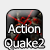

|
|
| Operation Red Falcon Update - posted by Noz on Mon 20 May 2002 16:27:46 | Comments (0) |
|
| Just received this email update from the Operation Red Falcon team:
---------------------------------
New Hoster and Weapon Renders
---------------------------------
Posted 5.19.2002 by bigmomma:
Finally we have uploaded our website onto the server of our new hoster! And it's not only an "internal" change, but also the visual layout changed: no more blinking banners! Hooray! I assume all of you will welcome this! A great thanks to Actionrealm.com who made this possible! Our forum is also online now so don't miss to visit it!
And to celebrate our move to our new hoster we have new renders of two weapons which will be featured in the ORF Multiplayer part. It's the H&K MP5A2 and the Colt M4A1.
H&K MP5A2
Colt M4A1 |
|
|
| BWQ3UTL Season 2 - posted by Excession on Thu 02 May 2002 17:48:53 | Comments (0) |
|
| After a lot of hard work carried out by Crusader, Season 2 of the Barrysworld Quake3 Urban Terror League kicks off tonight, with 24 clans fighting it out over 3 divisions to decide who is the best.
Apologies to the clans that are left on the pending list, but due to the number of servers we can use, and time constraints, we had to limit the league to 3 divisions, hopefully we will be able to have more next season.
Any clans taking part, or if you just want to keep an eye on the action, idle in the League Channel from 6.30 pm (UK time) till around 10.30 pm (UK time).
All thats left to say really is GL to all the clans involved and HF. |
|
|
| Interview with BWCSL winners D0es N0t C0mpute - posted by Rogue1 on Sun 21 April 2002 11:33:41 | Comments (0) |
|
| An interview with .dNC, the winners of season 3 of the BWCSL has been posted. It's an interesting read, as it gives a perspective on some of the major changes about to hit CS in the next few days from a top clan. The interview can be found here |
|
|
| BWCSL week 8 roundup and interviews with clans posted - posted by Rogue1 on Fri 19 April 2002 17:28:55 | Comments (0) |
|
| The roundup of the final week of the BWCSL has been posted, along with interviews with members from a couple of the competing clans. The article can be found here. |
|
|
| BWCSL week 7 roundup and week 8 predictions posted - posted by Rogue1 on Fri 12 April 2002 17:54:57 | Comments (0) |
|
| The roundup of the week 7 BWCSL games on de_aztec and predictions for week 8 postponed games and playoffs has been posted and can be found here. |
|
|
| Week 6 roundup and week 7 predictions posted - posted by Rogue1 on Fri 05 April 2002 14:16:12 | Comments (0) |
|
| The roundup of the week 6 BWCSL games on de_dust and predictions for week 7 has been posted and can be found here. |
|
|
| BWCSL week 5 roundup and week 6 predictions posted - posted by Rogue1 on Fri 29 March 2002 16:17:58 | Comments (0) |
|
| The roundup of the week 5 BWCSL games on de_inferno and predictions for week 6 has been posted and can be found here. |
|
|
| BWCSL week 4 roundup and week 5 predictions posted - posted by Rogue1 on Fri 22 March 2002 14:21:38 | Comments (0) |
|
| The current season of BWCSL is now more than half-way done and the latest series of division-by-division roundups and predictions has been posted and can be found here. |
|
|
| BWCSL Week 3 roundup and week 4 predictions posted - posted by Rogue1 on Fri 15 March 2002 15:48:38 | Comments (0) |
|
| With BWCSL nearing its halfway point for many clans, the roundup of the latest week's action has been posted, as well as some predictions for the upcoming week. All of this, as well as a couple of match reports can be found here. |
|
|
| NS-CO Released - posted by Excession on Sun 10 March 2002 10:33:47 | Comments (0) |
|
| Finally, after a long wait, Navy Seals - Covert Operations has been released.
This is what they have to say on the NS-CO site.
Yes, it's true. Beta1 is finally released.
It took us quite some time to get this baby done, but now the first file mirrors are here. About an hour later than planned Navy Seals: Covert Operations is here with it's first beta. We are very pleased with what we created and we hope that you will have as much fun playing as we had making this little baby :)
If you're new to NS-CO and mods for Quake3 in general then just take a look at the brand new get started guide which will help you download, install and set up NS-CO. It's an easy to understand step-by-step guide.
If you're familiar with Quake3 mods, then just go right on and download the files. So far only the beta_10.zip ZIP archive for all operating systems is available. The Self-Installing EXE will be added later. If you happen to have a running file mirror not mentioned on this page, then just mail us.
You might also want to check out the brand new online manual as it includes everything you need to know about NS-CO to play.
The official Team Mirage NS-CO servers are up! Join in!
213.146.162.140:27960
213.146.162.140:27961
213.146.162.140:27962
213.146.162.140:27963
Enjoy the game
Democritus
You can download the mod from the Barrysworld FTP, or from one of the sites listed in the files section on the NS-CO site. |
|
|
| UT - Strike Force 1.75 Released - posted by executor2k on Sat 09 March 2002 05:03:22 | Comments (0) |
|
| BOOM! Yes its out there! Rocking the servers at maximum Capacity!!! Its called: Strike Force 1.75!!!
"Strike Force 1.75 - Full Install
Strike Force 1.75 has been recoded from the ground up to provide more action and intense squad based combat. We redeaigned Strike Force for more fun, more action and a faster overall game play experience. Bugs were eliminated from our last version and a smaller, faster version was built. This new version is a FULL install and weighs in at only 110MB. It includes 10 maps with a full map pack following in two weeks. If you tried Strike Force before we suggest you try it again. 1.75 is an all new experience.
Key Features
-10 Real World Maps
-Location damage
-Muzzle flashes and tracer fire
-Super fast server browser
-Over 22 Weapons
-4 Game Types (TeamDM, DM, Escape & Hostage Rescue)
-Weight System (Effects Player Speeds Depnding on amount carried)
-Stamina System (Effects speed, weapon accuracy and heart rate)
-Over 400 different character animations
-Fast paced action for fun while keeping the realism feel.
-Whistle at your team mates for attention and use a wide variety of communication commands.
-Sprint speeds for faster running and quick attacks
-Super balanced weapon specs tested by our 50+ team of beta testers
-All new weapon sounds that pack a punch
-Flashlight and Nightvision for Darkmatch
-Inventory stations for quick access to weapons
-Blood trails to follow wounded players and finish them off.
-Medals for the best overall players during rounds and matches.
-Map vote code to allow players to change game types and maps by voting. Also included kick feature to kick Tkers and problem players.
-Totally unique aim system which requires players to actually aim their weapons for better accuracy. Making players think more and work as a team.
1.75 Download Links - Mac and Linux builds will soon follow. You must remove any prior version of Strike Force. "
by Optimizer - Strike Force Producer
And off course, u can grab the GOODS ( Win based ) on our BarrysWorld FTP server:
Click here to download from the Best FTP Server!!!
U can also get more information at:
StrikeForceCenter |
|
|
| BWCSL week 2 roundup posted - posted by Rogue1 on Fri 08 March 2002 15:57:08 | Comments (0) |
|
| My roundup of the second week of the current season of the Barrysworld Counter-Strike league has been posted and can now be found
here.
|
|
|
| TNG 2.6 released - posted by Deathwatch on Wed 06 March 2002 14:35:12 | Comments (1) |
|
|  | Version 2.6 of TNG, an Action Quake 2 modification, has been released today. This version is mainly a bugfix version of TNG 2.5
It has the following changes:
From 2.5
+ 'stats list' shows average accuracy for each player including player ID
+ Stats command followed by player ID will display someone else's stats
+ auto_join toggle for forced joins to the team players were on last map
+ auto_equip toggle for forced weapons from last map on players
+ stats_mode user variable which automaticly sends stats to players at round/map end
+ Updated Stats Code
+ Showing health icon on screen when bandaging (thanks to Dome)
+ Added %P for last damaged player
+ Automatic recording of demos added (autorecord command)
* TNG now accepts MS formatting on .agq files
* Fixed invdrop weapon farming in any teamplay mode
* Toggle for the Statistics screen when a map ends (stats_endmap)
* Toggle to record stats between rounds (stats_afterround)
- Fixed ff_afterround
- In matchmode, the forcing of say_team in mm_forceteamtalk 2 wont be off if a team unreadies during a round
- Fixed newline problem with announcer (IMPRESSIVE.. 1 FRAG LEFT)
- Fixed scoreboard alignment for after game scoreboard
- Fixed FPM counter
- CTF, fixed dropping players out of teams at the end of a map
- CTF, fixed players getting legdamage while Shield is on
- Changes %D to show hits in Kevlar Vest and Kevlar Helmet
- Fixed a small bug which allowed people to deny kills by typing 'team none'
- Fixed a small bug with the HC in hc_single 0 mode
- Reset some variables to original values
- Fixed bug where rrot would override sv softmap
- Fixed rrot selecting same level again
- Made rrot a bit more random
- Updated Credits menu
You can download TNG from the BarrysWorld FTP here:
AQ2 TNG 2.6 Full (win32)
AQ2 TNG 2.6 Full (linux)
AQ2 TNG 2.6 Upgrade (win32)
AQ2 TNG 2.6 Upgrade (linux)
The BarrysWorld AQ2 servers are already running TNG 2.6 thanks to Natrat for sorting this out. |
|
|
| Beta Release and League News. - posted by Excession on Mon 25 February 2002 00:10:36 | Comments (0) |
|
| Good news on the Beta front, as the 2.5 patch has been released, which fixes a couple of problems found in 2.4.
For the list of download sites, visit the UrbanTerror.net website.
Now for the league news. As some of you may know, I was the BWQ3UTL organiser, but decided to quit and hand the job over to someone else, ukv|Crusader is now in charge of the league.
Due to this, earlier tonight, a meeting was held by most of the people who are involved with the league, in the league channel (#bwq3utl) on Quakenet.
At the meeting it was decided that the organisational structure of the league should change, to make it easier to run smoothly, as a result of this, there will be another meeting taking place in the League Channel, on Tuesday the 26th of February, at 9pm GMT.
Any league admins who cant attend should contact Crusader if they want to be considered for the position of Divisional Admin. |
|
|
| Urban Terror Bug Fix - posted by Excession on Thu 14 February 2002 13:15:22 | Comments (0) |
|
| Due to a couple of bugs rearing their ugly heads in Beta 2.4, SID are working on a patch, that will hopefully be out soon.
The patch should fix the following problems:
client info problems caused by incorrect handling of team skins - this led to a variety of problems, especially for server admins. Players may have noticed rapidly flicking skins. Server admins would have seen error messages spammed in their logs.
extra server data being sent to client too often, causing various lag spikes on the server when people died, joined as spectator, or maps changed among others
bug that caused servers with bots and min_players set to multiply bots until server was filled (the 999 bot problem)
bug that allowed players to follow enemies when g_followfriendly was set
added a delay on zoom in that prevents snipers from gaining full accuracy immediately; this is to stop script exploits that let people fire accurately while unzoomed
unlocked r_gamma as per community requests
added 4 new cvars to be locked |
|
|
| Urban Terror Beta 2.4 is here!! - posted by Excession on Fri 08 February 2002 22:54:45 | Comments (1) |
|
| You can download the Beta 2.4 upgrade (21.1mb) if you are currently running Beta 2.3. If this is your first time with Urban Terror, then download the full Beta 2.4 (150mb). Both files will bring you up to the current release.
To be honest, I really dont see much point in posting all the links for the download of Beta 2.4 on here, so go to UrbanTerror.net for the full list. |
|
|
| DoD Beta 2 Win32 Client - posted by Noz on Thu 07 February 2002 01:25:55 | Comments (0) |
|
|
|
|
| Day of Defeat Beta 2 Server Files - posted by Noz on Thu 07 February 2002 01:09:52 | Comments (0) |
|
| And here it is, slightly late, but things are rolling...
Here is our Linux Server Files. LINUX Admins grab these and get your servers up asap !
Client Files are coming right after these, so be patient !!
LINUX FILES ONLY !!
=======================
http://www.fileplanet.com/index.asp?file=84648
http://games.gci.net/pub/Half-Life/Mods/DoD/dod_v20.tar.gz
http://files.ausgamers.com/?agn=details&id=1526
http://www.filefront.com/?file=16648
http://www.planetdod.de
http://www.daddeln.de/index.php?section=dod20
http://dod.boomtown.net/beta2.asp
http://mib.esoteric.ca/downloads/dod_v20.tar.gz
http://www.dodfrance.com/files/dod/2.0/linux/dod_v20.tar.gz
DayOfDefeatMod.com have released the Linux server binaries. Anyone who follows mod updates such as this will know, the clients aren't far off when this happens. |
|
|
News Archive
|
|
|
Visitors since 03/05/01

|


{kind=link}
{kind=link}